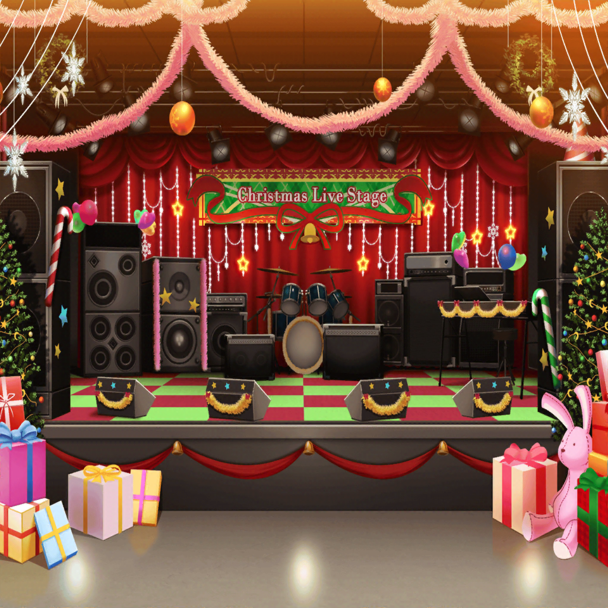

크리스마스 라이브 종료 후
CiRCLE
카스미
다들~~ 오늘은 와 줘서 고마워~~!
메리~~~ 크리스마~~~스!
카스미
정~~말로 모두 덕분에
즐거운 크리스마스 라이브가 됐어!
진~~짜 고마워!
아리사
카, 카스미! 너 좀 너무 들뜬 거 아니야!?
카스미
그치만~~!
엄청 즐거웠는걸~!
다들 즐거웠어!?
유리
물론이야! 크리스마스 라이브 중에 최고였어.
카스미
유, 유리 선배!
유리
리미! 정말 수고했어!
리미
고마워~ 언니!
글리글리 멤버도 와 줬구나?
나중에 감사 인사하러 갈게!
유리
그것보다 그 곡은 역시 리미가 만든 거야?
엄청나게 좋았어!
다음엔 글리글리 신곡이라도 만들어 달라고 해볼까?
리미
아, 아니야, 글리글리 곡이라니……!
카스미
저기 봐, 아리사!
리미링의 저 기뻐하는 얼굴!
우리까지 기쁘지 않아!?
아리사
그러네.
코코로
안녕, 카스미!
카스미
와앗! 코코롱!
코코로
웃는 얼굴이 가득한, 무척 멋진 크리스마스 라이브였어!
나는 너무나 즐거워서 도중에 몇 번이나 백 텀블링 해버렸어!
카스미
봤어!
스테이지 위에서도 잘 보였거든!
란
카스미, 수고했어.
카스미
와~~! 란 짱~! 와 줘서 고마워!
어땠어!? 오늘 라이브!
란
뭐…… 나쁘진 않았어.
내년에는 우리도 크리스마스 라이브를 해보고 싶을지도.
카스미
그거 괜찮다!
꼭 해야 해! 꼭! 약속이야!
카논
저기…… 타에 짱……
타에
아, 카논 선배.
카논
크리스마스 라이브에 초대해줘서 고마워.
타에
아, 네.
하지만 초대한 건 카스미에요.
카스미한테 말하는 게 좋을 거 같아요.
카논
카스미 짱, 인기 많아서 좀처럼 순서가 안 올 것 같았거든……
가장 말하기 편한 타에 짱한테 고맙다고 전해둘까 해서.
미사키
이치가야 씨~ 수고했어~
아리사
고마워, 오쿠사와 씨.
미사키
크리스마스 라이브, 대성공해서 잘됐네~
아리사
뭐, 뭐어……
개인적으론 성공하든 실패하든?
딱히 뭐든 간에……
미사키
그래그래……
따로 뭐라고 하지 않아도 괜찮다니까.
대강 알겠으니까.
사아야
아하하……
다들 흥분을 가라앉히지 못하는…… 느낌이네.
웬일로 아리사마저 들떠 있고 말이야……
토모에
아, 사아야!
사아야
토모에~!
토모에
멋진 라이브였어, 최고였다고!
……그치, 아코?
아코
응응! 정말로 멋있었어!
마계로부터 울려 퍼지는 종소리가…… 그러니까……
위대한 어둠을 가져와서……
사아야
무, 무슨 소리야……?
린코
그, 그러니까…… 최고였다……는 말이에요.
사아야
……그, 그렇구나.
사아야
그런데, 모르는 관객들 앞에서 연주하는 것도 즐겁지만
이렇게 많은 친구들 사이에 둘러싸여서 같이 불타오르는 것도
전혀 다른 재미가 있네.
???
사아야!
사아야
……응?
???
안녕~ 놀러 왔어~
사아야
……아? 앗?
……나츠?
어, 어떻게 여길!?
나츠키
새로운 밴드에서 활약하고 있는 사아야를 보러 온 거지.
나뿐만이 아니야…… 자, 저기 봐.
사아야
후미카, 마유!
……사토 짱도!?
나츠키
우리 CHiSPA도 모두 집합했다고~!
사아야
어, 어떻게? 무슨 일인지 모르겠는데!?
어떻게 된 거야!?
카스미
아하하하핫! 해냈다~! 서프라이즈 성공이야~!
사아야
서, 서프라이즈!?
나츠키
실은 우리도 크리스마스 라이브에 초대받았거든!
그래서, 사아야한테 서프라이즈 할 거니까 꼭 비밀로 해 달랬어.
나츠키
사아야가 밴드를 나간 후에 서로 조금은
어색한 시기가 있었지만, 지금은 평범하게 지내잖아?
그래서 무심결에 말할까 봐 조마조마했다니깐~!
카스미
사~야, 실은 CHiSPA 애들도 부르고 싶었었지?
사아야
으, 응…… 부르고 싶었는데……
좀처럼 초대할 수 없어서……
사아야
……그걸 카스미가 눈치채고 초대해준 거야?
카스미
아니, 내가 떠올린 건 아니야!
아리사가 생각해냈어!
사아야
……뭐!? 아리사가……?
아리사
시, 시끄러워~ 카스미!
쓸데없는 말 하지 않아도 된다니까!
사아야
아리사가…… 나츠네를 초대해 줬구나……?
아리사
아, 그게…… 그, 그러니까……
사아야, 기뻐할까…… 싶어서……
사아야
……하하, 하하하하.
엄청난 서프라이즈였어…… 왠지 한 방 먹은 느낌이야.
정말 엄~청 놀랐다니까……
사아야
정말, 아리사도 참…… 성장했네~!
아아~ 엄청 놀랐어!
카스미
저기 있지!
이따가 크리스마스 파티도 할 거니까 다들 와 줘!
카스미
크리스마스 파티는 말이지!
무려!
아리사가 산타클로스 분장을 할 겁니다~!
아리사
머, 멍청아!?
할 리가 없잖냐~!
카스미
그러면 다들~~~~~!
메리~~ 크리스마~~~스!!!!